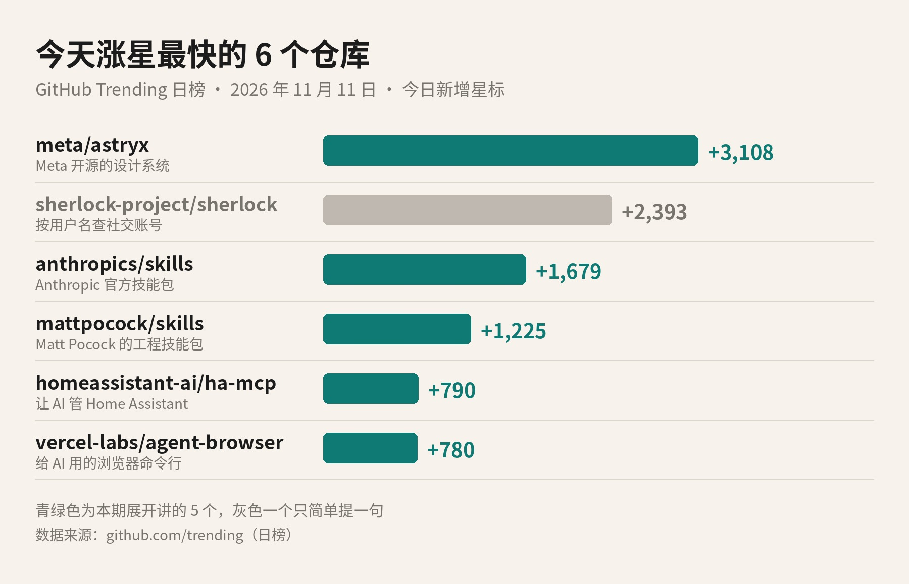
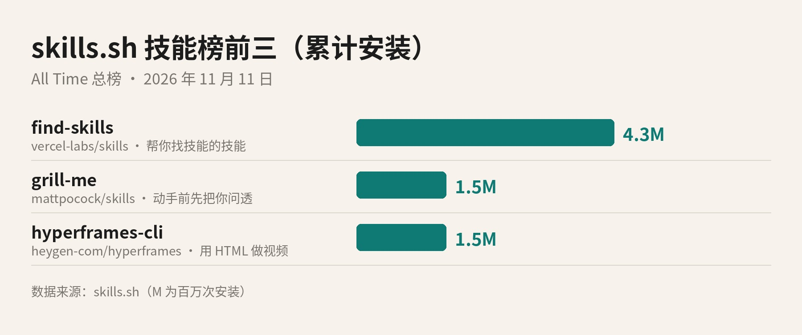

今天 GitHub 上涨星最快的项目，来自 Meta。一个叫 Astryx 的仓库，一天多了 3,108 颗星。
更有意思的是跟在它后面的几位。好几个都不是给人直接用的软件，而是写给 AI 看的「说明书」，或者递给 AI 的工具。今天就挑 5 个，加上技能榜前三，一个一个讲。

GitHub Trending 日榜 · 今日新增星标。青绿色为本期展开讲的 5 个。数据来源：github.com/trending
GitHub，你可以理解成程序员放代码的地方，有点像代码界的网盘加朋友圈。每个项目叫一个「仓库」。看到喜欢的仓库，可以点一下 Star，也就是星标，差不多等于收藏加点赞。
GitHub 自己有一张热门榜，叫 Trending。日榜上每个项目旁边都写着「今天新增了多少颗星」。这张榜的排序规则官方没公开，也不完全按涨星多少排，所以上面那张图，我是按「今日新增」这一栏重新排的。
还有一个今天会反复出现的词：Agent。说白了就是会动手的 AI。它不只陪你聊天，还能读代码、改文件、开网页、调用工具，一步一步把事情做完。今天榜上这一串项目，几乎都在围着它转。
先说「设计系统」是啥。做网页或者 App 的时候，按钮、输入框、表格、弹窗、配色、字号，这些东西每个页面都要用。设计系统就是把它们提前做成一整套现成的零件，再配上规矩，谁来搭页面，拼出来的风格都统一。
Astryx 的 README 里说，这套东西在 Meta 内部长了八年，是公司里用得最多、规模最大的设计系统，撑起了 13,000 多个应用。现在它开源出来，有 150 多个组件，带品牌主题、深色模式、现成模板，还有一个命令行工具。它基于 React 19 和 StyleX，目前还标着 Beta，也就是测试版。
它最想让人记住的一点，是人和 Agent 用同一套。官方的说法是：接口、文档和命令行是一起设计的，人和 AI 助手按同一份参考来搭界面。以后你让 AI 帮你写页面，它查的说明，就是你自己查的那一份。
许可证是 MIT，主要语言是 TypeScript。许可证就是这份代码的使用规矩，MIT 属于很宽松的一种，个人和商用都可以，保留原来的版权声明就行。
跳过灰色那条，先讲第三、第四名，因为它俩是同一类东西：Skill，我叫它技能包。
技能包其实就是一个文件夹。里面放一份叫 SKILL.md 的说明，写清楚这件事该怎么做，有时再配几个脚本和素材。AI 遇到对口的活，就把这份说明翻出来照着做。你可以把它想成给新同事准备的操作手册：手册写得好，新人第一天就能上手。
第三名是 anthropics/skills，Anthropic 官方的技能包仓库，今天涨了 1,679 颗星，总星数已经 19 万多。里面有做设计、写音乐这类偏创意的，有测试网页、搭 MCP 服务器这类偏技术的，也有写公司通稿、套品牌规范这类办公用的。Claude 处理 Word、PDF、PPT、Excel 文件时背后用的那几个技能，也放在里面当参考。
这个仓库整体没有挂统一的许可证标签。README 里说，其中很多技能是 Apache 2.0 开源的，具体以每个文件夹为准。它还专门写了一句免责：这些技能是拿来演示和学习的，用在要紧的事情上之前，先在自己的环境里测一遍。
第四名是 mattpocock/skills，作者 Matt Pocock，今天涨了 1,225 颗星。仓库的名字很直白：Skills for Real Engineers，给真正写工程的人用的技能。他说这些是自己每天干活在用的，而且特意强调不是 vibe coding，也就是那种凭感觉让 AI 随便写的写法。许可证是 MIT。
他最受欢迎的一个技能叫 grill-me，直译是「拷问我」。用法是：动手之前，先让 AI 把你问个底朝天，一轮一轮问清楚你到底想做什么，每个问题还附上它建议的答案。作者的判断是，AI 干活跑偏，最常见的原因是双方没对齐。这套技能 Claude Code、Codex、GitHub Copilot、Gemini CLI 都能装，其他工具也可以用后面要讲的 npx skills 来装。
这一个要先认识两个名字。Home Assistant 是一个开源的智能家居中控，能把灯、空调、窗帘、各种传感器接到一个地方统一管。MCP 全称 Model Context Protocol，官方把它比作 AI 应用的 USB-C 接口：一种公开标准，让 AI 能用统一的方式接上外部的系统和工具。
homeassistant-ai/ha-mcp 就是这样一个接口。装上以后，Claude、ChatGPT 这类 AI 助手就能帮你配置 Home Assistant、写自动化规则。比如你说一句「晚上十点以后有人走过走廊，就把灯调暗」，让它去设置。它今天涨了 790 颗星，许可证 MIT，主要语言是 Python，README 上的徽章写着一共 87 个工具。
安装要 Home Assistant 2026.8 或更新的版本，通过 HACS 装。HACS 是 Home Assistant 社区的插件商店。到了 2026.11 版，可以直接在设置里的 Marketplace 搜 HA-MCP。
有一点值得多看一眼。它要用管理员权限来动你家的设备，README 给了两种做法，更稳妥的一种是单独给它建一个管理员账号，只允许本地访问。它还特意提醒，走这条路时别把你自己的账号密码填进去。家里的门锁和摄像头也接在上面的话，这一步别省。
vercel-labs/agent-browser 来自 Vercel Labs，今天涨了 780 颗星。它是一个命令行工具，给 AI 一个能一条命令一条命令操控的浏览器。
它的思路很朴素。AI 先跑一次 snapshot，拿到一份精简的文字版页面，每个按钮、链接都带一个编号，比如 @e1。AI 想点哪个，就说点哪个编号，点完再看一眼页面确认结果，然后接着下一步。浏览器在命令之间一直开着，所以每一步都只是一条很短的命令。
它用 Rust 写成，许可证是 Apache-2.0，默认用的是 Chrome for Testing，也就是谷歌给自动化测试准备的那版 Chrome。它在下面要讲的技能榜上也排第四，累计安装 150 万次。
顺带说一句灰色那条。第二名 sherlock 是个 2018 年就有的老项目，输入一个用户名，它去 400 多个社交网站帮你查有没有这个账号，今天涨了 2,393 颗星。它跟 AI 关系不大，这期就不展开了。
刚才说了技能包，那去哪儿找技能包？有个网站叫 skills.sh，首页自称开放的 Agent 技能生态。上面的技能，一行命令 npx skills add 就能装进你的 AI 工具里。它的总榜按累计安装次数排，今天前三名和昨天一样。

skills.sh All Time 总榜前三，按累计安装次数。数据来源：skills.sh
第一名 find-skills，430 万次安装，来自 vercel-labs/skills。它是一个「帮你找技能的技能」：你问 AI「这件事怎么做」「有没有现成的技能」，它就去技能库里搜，找到了再帮你装。vercel-labs/skills 这个仓库本身，就是那条 npx skills 命令，README 写着支持 OpenCode、Claude Code、Codex、Cursor，另外还有 75 个工具。许可证 MIT，用 TypeScript 写。
第二名 grill-me，150 万次，就是上面 Matt Pocock 那个「先把你问透」。一个今天涨星第四的仓库，同时在技能榜排第二，装的人确实不少。
第三名 hyperframes-cli，也是 150 万次，来自 HeyGen 的 heygen-com/hyperframes。HyperFrames 是一个免费开源的框架，把 HTML、CSS、图片音视频素材和动画，渲染成 MP4 视频。这个技能教 AI 怎么用它的命令行：新建项目、预览、调时间线、本地或云端渲染。仓库许可证 Apache-2.0，主要语言 TypeScript。它的技能说明里写着，启动时会发一条使用统计，可以关掉，介意的话装之前看一眼。
第一，今天涨星第一的是 Meta 开源的设计系统 Astryx，一天 3,108 颗星，主打人和 AI 用同一套零件搭界面。
第二，技能包还在热。Anthropic 官方的 anthropics/skills 和 Matt Pocock 的 mattpocock/skills 一起进了今天涨星前四，skills.sh 总榜前三也没变。
第三，把 AI 接进浏览器、接进智能家居的工具，也在往上走。权限给多大，你自己定。
开源项目更新很快，装之前，还是打开它的 GitHub 页面，看一眼最新的 README。
署名：刀哥
来源清单：
https://github.com/trending?since=daily
https://github.com/meta/astryx
https://astryx.atmeta.com
https://github.com/anthropics/skills
https://github.com/mattpocock/skills
https://github.com/homeassistant-ai/ha-mcp
https://modelcontextprotocol.io/docs/getting-started/intro
https://github.com/vercel-labs/agent-browser
https://skills.sh/
https://github.com/vercel-labs/skills
https://github.com/heygen-com/hyperframes
https://github.com/sherlock-project/sherlock